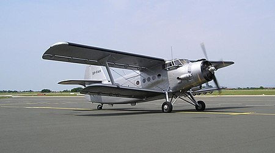
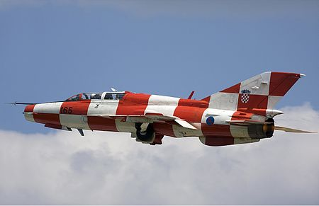
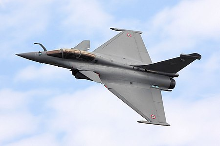

Osnutak
Hrvatsko ratno zrakoplovstvo osnovano je na 12. listopada 1991. odlukom predsjednika Republike Hrvatske Franje Tuđmana. Kamen temeljac Hrvatskom ratnom zrakoplovstvu bilo je osnivanje zrakoplovne skupine pri Zapovjedništvu Zbora narodne garde. Osnovna zamisao bila je okupiti pilote i ostale zrakoplovce koji su napustili JNA, pružiti stručnu pomoć postrojbama ZNG-a, te stvoriti jedinstven sustav zemaljskog promatranja, javljanja i protuzračne obrane Republike Hrvatske. Prvi Zrakoplov HRZ-a bio je AN-2, vidljiv na slici ispod.
Slika aviona An-2
Ratne godine
Prva borbena djelovanja izvode se ultralakim zrakoplovima koji, naoružani s osam bombi kalibra 3-4 kg, domaće izrade, napadaju s malih visina u sumrak ili noću. Borbeno se djeluje i zrakoplovima UTVA 75 koji su naoružani s četiri M79 Osa i raznim bombama. Kasnije, kako je rat odmicao u sastav HRZ-a ulaze borbeni avioni MiG-21(slika ispod), borbeni helikopteri Mi-24 te transportni helikopteri Mi-8 i Mi-17. Tijekom 1995. u odlučujućim oslobodilačkim akcijama Hrvatske vojske, HRZ je dokazalo kako je postala važna borbena komponenta OSRH. Tada su, između ostalog, izvođene akcije zaštite zračnog prostora, jurišna djelovanja te desanti pješačkih postrojbi.
Slika aviona MiG-21
Suvremeno doba
Nakon pristupanja Hrvatske NATO-u piloti i zrakoplovi HRZ pružali su potporu međunarodnim vojnim misijama ISAF i KFOR. HRZ je s preustrojem započelo 1. rujna 2007. godine, a postupak preustroja dovršen je krajem 2008. godine. U usporedbi s ranijim ustrojem smanjen je broj djelatnika te broj zrakoplovnih baza. Za obuku pilota HRZ raspolaže s 4 aviona Zlin Z-242L, 14 aviona Pilatus PC-9M i 8 helikoptera Bell 206B-3. Nadzvučnu komponentu čine 4 lovačka aviona Mikojan-Gurjevič MiG-21bisD i 2 trenažna MiG-21UMD, koje bi u 2024. trebali zamijeniti novi višenamjenski borbeni avioni. Vlada Republike Hrvatske je 28. svibnja 2021. objavila odluku da se za novi višenamjenski borbeni avion Hrvatskog Ratnog Zrakoplovstva odabire francuska ponuda i borbeni avion Dassault Rafale F3-R. U skladu s ponudom, 10 jednosjeda i 2 dvosjeda bit će isporučeni HRZ-u tijekom 2024. i 2025. godine.
Slika aviona Rafale
Tablica opreme HRZ
| Ime Letjelice: | Tip Letjelice: | Godina dizajna: | Godina dolaska u HRZ: | Broj aktivnih primjeraka u HRZ: | Tehničke karakteristike: | ||
|---|---|---|---|---|---|---|---|
| MiG-21BisD | Lovac-presretač | 1955. | 1992. | 6 | Max brzina:2200km/h | Max visina:17.5km | Max nosivost:10.5t |
| UH-60M Black Hawk | Višenamjenski Helikopter | 1974. | 2022. | 12 | Max brzina:300km/h | Max visina:5.9km | Max nosivost:1.2t |
| Rafale F3R | Višenamjenski Borbeni Zrakoplov | 1986. | 2024. | 12 | Max brzina:2200km/h | Max visina:16km | Max nosivost:24.5t |